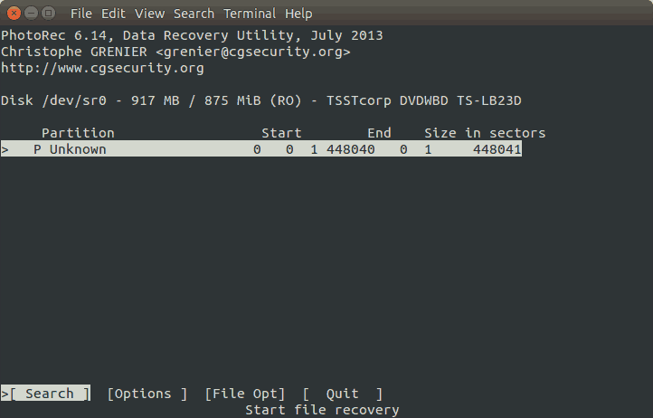

Camcorder DVD Video Recovery on Ubuntu with photorec (215-2-19091307)
TL;DR
I used a software called photorec to recover video records from a mini DVD. I tried it on a machine running Ubuntu 14.04 LTS and it worked without any problem. You can install it from Ubuntu repository. I didn’t check the current version and the version found on the Ubuntu repository. In general, Ubuntu repository doesn’t have the latest versions. Anyway, you can see the my version number below.
$ photorec /version
PhotoRec 6.14, Data Recovery Utility, July 2013
Christophe GRENIER <grenier@cgsecurity.org>
http://www.cgsecurity.org
Version: 6.14
Compiler: GCC 4.8
Compilation date: 2013-10-29T01:29:29
ext2fs lib: 1.42.9, ntfs lib: libntfs-3g, ewf lib: none, libjpeg: libjpeg-turbo-1.3.0
OS: Linux, kernel 3.19.0-80-generic (#88~14.04.1-Ubuntu SMP Fri Jan 13 14:54:07 UTC 2017) x86_64
In order to install it from the Ubuntu repository, the following command should be executed.
$ sudo apt install testdisk
Then you can execute the program using the following command.
$ photorec
You should see a text based user interface. I managed to recover my videos by following the instructions given by the program. In short, this is it!
Introduction
Image from sony.com
I have an old Sony Handycam camcorder. Its full name is DCR-DVD306E. I bought in 2007 and it is now 10 years old. Nevertheless it still works pretty well. Its main disadvantage is storage. It uses mini DVD for storage instead of memory card or internal HDD as in contemporary ones. As far as I remember, a single DVD can store video records with total time less than 30 minutes which is not very good. If you are planning to record long videos, you should prepare a bunch of blank DVDs. Of course, you can use rewritable DVDs. Battery usage time is dependent on the record quality. The highest resolution is HQ not HD and and it can record up to ~90 minutes on a single charge.
Diameter of mini DVD is 8 cm. It is 12 cm for standard DVD. Image from sony.com
The camcorder has a mini USB port and it is possible to transfer records to a PC using that cable while mini DVD is inserted into the camcorder. I have a DVD recorded 5 years ago. I can play videos on the camcorder. When I tried to transfer videos from the camcorder to PC using the USB connection, I got a DVD driver with a blank DVD on both Windows 7 and Ubuntu 14.04 LTS. Then I put DVD into my PC directly and got the same result, oops!
I suspected a corrupted file system. Although the camcorder is able to play videos without any problem and didn’t complain about the corruption, both Windows and Ubuntu didn’t read it correctly. I searched for data recovery programs and tried several of them.
Data Recovery Tools
Windows
CD Recovery Toolbox
First I tried CD Recovery Toolbox. A couple of years ago, I recovered videos from a standard CDs with scratches with help of the tool. Unfortunately for this case, it didn’t work as I expected. Since Windows detected the camcorder as a blank DVD, the tool also found a blank DVD.
IsoBuster
The second candidate was IsoBuster. I realized that I had installed it when I was trying to recover CDs with CD Recovery Toolbox and trial period was over. It scanned the DVD and listed some videos but it requested a license in order to recover them. Also list wasn’t complete.
After trying couple of tools on Windows, I switched to look tools for Linux.
Linux
lsdvd
I found suggestions for file recovery on forums and tried some of them.
First, I installed lsdvd.
$ sudo apt-get install lsdvd
and executed
$ lsdvd /dev/cdrom
libdvdread: Encrypted DVD support unavailable.
************************************************
** **
** No css library available. See **
** /usr/share/doc/libdvdread4/README.css **
** for more information. **
** **
************************************************
libdvdnav:DVDOpenFileUDF:UDFFindFile /VIDEO_TS/VIDEO_TS.IFO failed
libdvdnav:DVDOpenFileUDF:UDFFindFile /VIDEO_TS/VIDEO_TS.BUP failed
libdvdread: Can't open file VIDEO_TS.BU.
Can't open main ifo!
Then I tried to save raw content of DVD as image and mount it locally. Note that in my case, surface of the DVD is very clean and there is no reading error at I/O level.
$ dd if=/dev/sr0 of=image.iso bs=2048 conv=notrunc iflag=nonblock
$ mkdir /mnt/dvd
$ sudo mount -o ro,loop image.iso /mnt/dvd/
The output was:
mount: you must specify the file system type
Then I tried the following
$ sudo mount -o ro,loop -t iso9660 image.iso /mnt/dvd/
but this was also an unsuccessful attempt.
mount: wrong fs type, bad option, bad superblock on /dev/loop0,
missing codepage or helper program, or other error
In some cases useful info is found in syslog - try
dmesg | tail or so
$ isoinfo -d -i image.iso
CD-ROM is NOT in ISO 9660 format
dvdisaster
I gave up working on the image and searched for further alternatives. First I tried dvdisaster but it gave a similar output to CD Recovery Toolbox. It detected a blank DVD as shown below.
Disaster with dvdisaster
photorec
Later, I found a tool called photorec.
Photorec is published under GPLV v2+ license by cgsecurity.org. As I stated at the beginning, it is easy to install it from Ubuntu repository. Here is the command for installation.
$ sudo apt install testdisk
Prior to open the tool, you should insert the DVD. Run the tool using the following command.
$ photorec
The tool is self explanatory but I add step-by-step screenshots just for clarification.
$ mkdir sony_dvd
$ photorec
photorec Step 1
Press Enter.

photorec Step 2
Press Enter.
Select Other press Enter.
photorec Step 3
Select the output directory by pressing Enter then press C.
photorec Step 4
photorec Step 5
Then select Quit and press Enter couple of times.
Conclusion
I hope this post helps you. If you like photorec, you may consider making a donation to the author of the tool!